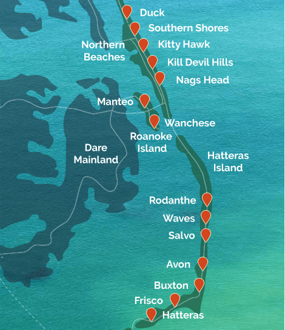

The Outer Banks is a 200 mile long stretch of barrier islands that make up the majority of the North Carolina coastline. During the summer season, which takes place from Memorial Day in May to Labor Day in September, the region is a popular tourist destination, with thousands of visitors flocking to the OBX, as the Outer Banks is coined, for its expansive beaches and parks. Additionally, visitors frequent for the several historic lighthouses and shipwrecks that dominate the coastline. Continue to read on for more information about the Outer Banks!
This video gives an overview of the Outer Banks and its points of interest, which include beaches, parks, lighthouses, and the Wright Brothers National Memorial.